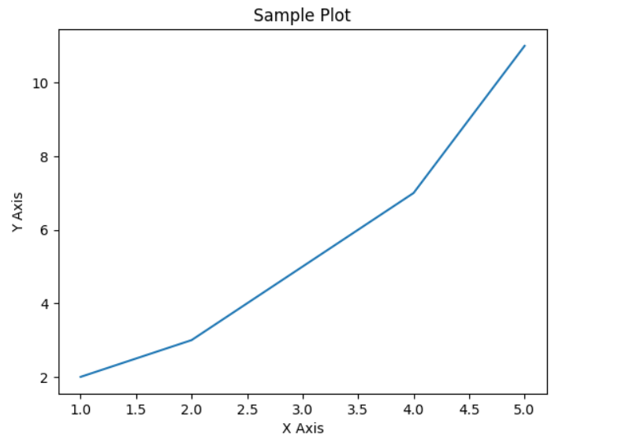

Introduction To Python
Python is a popular programming language. It was created by Guido van Rossum and released in 1991.
It is used for:
- Web Applications
- Desktop GUI Applications
- Console-Based Applications
- Data Analysis
- Machine Learning
- Artificial Intelligence
- Cloud Computing
- Software Development
- Database Access
- Games and 3D Graphics
What Are Variables?
In Python, variables are used to store information that can be referenced and manipulated in a program. A variable is created when you assign a value to it. Python variables do not require explicit declaration to reserve memory space; the declaration happens automatically when you assign a value to a variable.
For example:
x = 5
y = "Hello, World!"
In the above example, x is a variable assigned the
integer value 5, and y is a variable
assigned the string value "Hello, World!".
Variables in Python have the following characteristics:
- Variables do not need to be declared with any particular type, and they can even change type after they have been set.
- Variable names must start with a letter or an underscore, and can contain letters, numbers, and underscores.
-
Variable names are case-sensitive (e.g.,
ageandAgeare two different variables).
Here are some more examples of valid variable assignments:
name = "Alice"
age = 30
is_student = True
height = 5.9
skills = ["Python", "Data Analysis", "Machine Learning"]
Remember, you can always reassign a variable to a new value, and the type of the variable can change based on the value you assign:
number = 10 # initially an integer
number = "ten" # now a string
Data Types
In Python, data types are used to classify one particular type of data. This is important because it helps the interpreter or compiler understand how the programmer intends to use the data. Python provides several built-in data types, including the following:
-
int- Integer type, representing whole numbers, e.g.,10,-3 -
float- Floating-point type, representing real numbers with decimal points, e.g.,3.14,-2.7 -
str- String type, representing sequences of characters, e.g.,"Hello",'Python' -
bool- Boolean type, representing truth values, eitherTrueorFalse -
list- List type, representing ordered collections of items, e.g.,[1, 2, 3],["apple", "banana", "cherry"] -
tuple- Tuple type, representing ordered, immutable collections of items, e.g.,(1, 2, 3),("red", "green", "blue") -
dict- Dictionary type, representing collections of key-value pairs, e.g.,{"name": "Alice", "age": 25} -
set- Set type, representing unordered collections of unique items, e.g.,{"apple", "banana", "cherry"}
Here are some examples of variable assignments for each data type:
# Integer
age = 25
# Float
pi = 3.14159
# String
greeting = "Hello, World!"
# Boolean
is_active = True
# List
fruits = ["apple", "banana", "cherry"]
# Tuple
colors = ("red", "green", "blue")
# Dictionary
person = {"name": "Alice", "age": 25}
# Set
unique_numbers = {1, 2, 3, 4, 5}
Python's dynamic typing allows you to change the type of a variable by assigning a new value of a different type:
value = 42 # value is an integer
value = 42.0 # now value is a float
value = "forty-two" # now value is a string
Understanding and using these data types effectively is essential for writing robust and efficient Python programs.
Control Flow
Control flow in Python refers to the order in which individual statements, instructions, or function calls are executed or evaluated. Python provides several control flow tools to help manage the flow of execution in a program. These include conditional statements, loops, and control flow statements.
Conditional Statements
Conditional statements allow you to execute certain pieces of code
based on whether a condition is true or false. The main conditional
statements in Python are if, elif and
else
Example:
age = 20
if age >= 18:
print("You are an adult.")
elif age >= 13:
print("You are a teenager.")
else:
print("You are a child.")
Loops
Loops allow you to repeat a block of code multiple times. Python
provides two types of loops: for and
while loops.
For Loops
for loop is used to iterate over a sequence (such as a
list, tuple, dictionary, set, or string) with the following syntax:
Example:
fruits = ["apple", "banana", "cherry"]
for fruit in fruits:
print(fruit)
While Loops
A while loop repeatedly executes a block of code as long
as a condition is true. The syntax is:
Example:
count = 0
while count < 5:
print(count)
count += 1
Control Flow Statements
Python includes several statements that alter the flow of control:
-
break- Exits the nearest enclosing loop prematurely. -
continue- Skips the rest of the current loop iteration and proceeds to the next iteration. -
pass- A null statement that does nothing; it can be used as a placeholder.
Examples:
# Using break
for i in range(10):
if i == 5:
break
print(i)
# Using continue
for i in range(10):
if i % 2 == 0:
continue
print(i)
# Using pass
for i in range(5):
if i == 3:
pass
print(i)
Understanding and using control flow tools effectively allows you to write more flexible and dynamic programs.
Functions
Functions in Python are reusable blocks of code designed to perform a specific task. Functions help in organizing code, making it more readable, and reducing redundancy. You can define your own functions or use built-in functions provided by Python.
Defining Functions
Functions are defined using the def keyword, followed by
the function name, parentheses, and a colon. The body of the function
contains the code to be executed and is indented. You can also define
parameters within the parentheses to pass data to the function.
Example:
def greet(name):
return f"Hello, {name}!"
message = greet("Alice")
print(message) # Output: Hello, Alice!
Function Parameters
Functions can take parameters, which are specified within the parentheses in the function definition. Parameters allow you to pass values to the function, making it more flexible.
Example:
def add(a, b):
return a + b
result = add(5, 3)
print(result) # Output: 8
Default Parameters
You can provide default values for parameters. If no value is passed for a parameter with a default value, the default value is used.
Example:
def greet(name="World"):
return f"Hello, {name}!"
print(greet()) # Output: Hello, World!
print(greet("Bob")) # Output: Hello, Bob!
Returning Values
Functions can return values using the return statement.
Once the return statement is executed, the function
terminates, and the specified value is returned to the caller.
Example:
def square(x):
return x * x
result = square(4)
print(result) # Output: 16
Lambda Functions
Python also supports anonymous functions, known as lambda functions.
These are small, single-line functions that are defined using the
lambda keyword.
Example:
square = lambda x: x * x
print(square(5)) # Output: 25
Built-in Functions
Python provides a rich set of built-in functions that you can use
without needing to define them yourself. Some common built-in
functions include print(), len(),
type(), and range().
Example:
print(len("Hello")) # Output: 5
print(type(42)) # Output:
print(list(range(5))) # Output: [0, 1, 2, 3, 4]
Understanding and using functions effectively is crucial for writing clean, efficient, and reusable code in Python.
Basic Libraries
Python comes with a vast standard library and many third-party libraries that provide additional functionality. These libraries make Python a powerful and versatile programming language. Below are some of the most commonly used libraries for basic tasks:
NumPy
NumPy (Numerical Python) is a library used for working with arrays. It also provides functions for performing mathematical operations on arrays. NumPy is essential for scientific computing and data analysis.
Example:
import numpy as np
array = np.array([1, 2, 3, 4, 5])
print(array)
print(np.mean(array)) # Output: 3.0
Pandas
Pandas is a library used for data manipulation and analysis. It provides data structures like DataFrames, which make it easy to work with structured data.
Example:
import pandas as pd
data = {'Name': ['Alice', 'Bob', 'Charlie'], 'Age': [25, 30, 35]}
df = pd.DataFrame(data)
print(df)
print(df['Age'].mean()) # Output: 30.0
Matplotlib
Matplotlib is a plotting library used for creating static, animated, and interactive visualizations in Python. It is widely used for data visualization.
Example:
import matplotlib.pyplot as plt
x = [1, 2, 3, 4, 5]
y = [2, 3, 5, 7, 11]
plt.plot(x, y)
plt.xlabel('X Axis')
plt.ylabel('Y Axis')
plt.title('Sample Plot')
plt.show() #Output:

Requests
Requests is a library used for making HTTP requests in Python. It is simple and easy to use, making it a popular choice for interacting with web APIs.
Example:
import requests
response = requests.get('https://api.github.com')
print(response.status_code)
print(response.json())
Beautiful Soup
Beautiful Soup is a library used for web scraping purposes to pull data out of HTML and XML files. It provides Pythonic idioms for iterating, searching, and modifying the parse tree.
Example:
from bs4 import BeautifulSoup
html_doc = '<html><head><title>Sample
Page</title></head><body><p>Hello,
World!</p></body></html>'
soup = BeautifulSoup(html_doc, 'html.parser')
print(soup.title.string) # Output: Sample Page
SQLAlchemy
SQLAlchemy is a SQL toolkit and Object-Relational Mapping (ORM) library for Python. It provides a full suite of well-known enterprise-level persistence patterns.
Example:
from sqlalchemy import create_engine, MetaData, Table, Column,
Integer, String
from sqlalchemy.orm import sessionmaker
engine = create_engine('sqlite:///:memory:')
metadata = MetaData()
users = Table('users', metadata,
Column('id', Integer, primary_key=True),
Column('name', String),
Column('age', Integer))
metadata.create_all(engine)
Session = sessionmaker(bind=engine)
session = Session()
session.add_all([
{'name': 'Alice', 'age': 25},
{'name': 'Bob', 'age': 30},
{'name': 'Charlie', 'age': 35}
])
session.commit()
result = session.query(users).all()
for row in result:
print(row)
These libraries are just the tip of the iceberg. Python's ecosystem is rich with libraries for virtually every application, making it a versatile choice for developers.